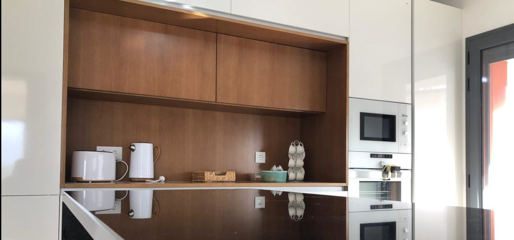
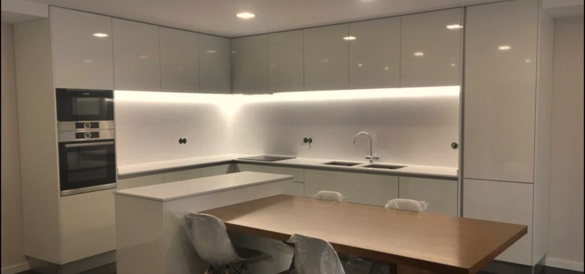
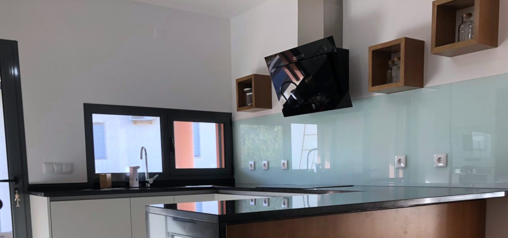
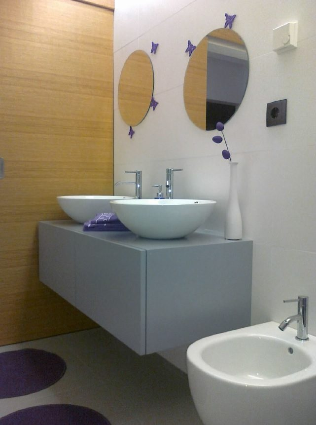
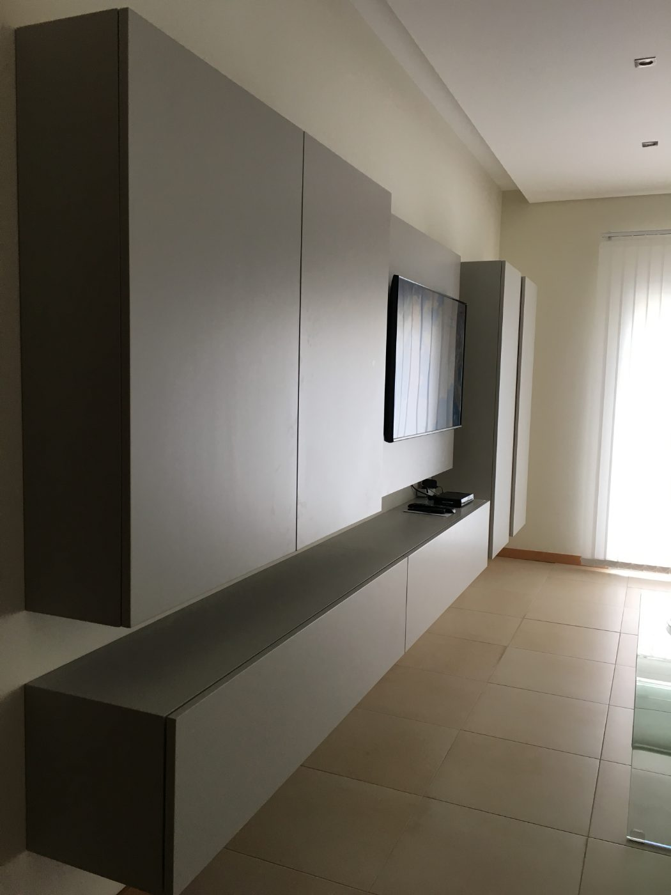

Um site que já dá uma estimativa, e faturas que se lançam sozinhas no Sage.
Duas peças feitas por medida, como os vossos móveis: o novo website de mobiliário, com pré-orçamento em três gamas, e a leitura automática das faturas de fornecedores que hoje chegam em papel. O Top Solid e o Sage ficam onde estão.
Em Coimbra desde então. Cozinhas, roupeiros, casas de banho e salas por medida.
Base, média e superior: cada uma abre os materiais compatíveis e dá um intervalo de preço.
Por fatura de fornecedor, em vez de a escrever no Sage linha a linha.

3.600O que propomos, para quem lê isto sem nós
Novo website 4MS, com a loja
Catálogo de projetos que vocês atualizam sem programador, pré-orçamento por checklist em três gamas, e a loja de eletrodomésticos e colchões no mesmo site.
Faturas de fornecedores direto para o Sage
Fotografia ou digitalização da fatura em papel; o sistema lê, liga cada linha ao artigo certo com as vossas regras, lança no Sage e prepara a pasta do contabilista.
8 semanas, as duas em paralelo
As faturas ficam a trabalhar primeiro (semana 6). O site é publicado na semana 8, depois de testarmos a tabela de preços convosco.
Uma reunião, uma tabela, as fotografias
Uma reunião de levantamento com a equipa, a tabela de preços por gama, e as fotografias dos projetos que querem mostrar.
Próximo passo: alinharmos a proposta numa segunda reunião e marcarmos o arranque com a nossa equipa técnica.
Seis coisas que o Nelson nos disse
Faturas em papel, artigo a artigo
Chegam pelo correio e são escritas no Sage uma a uma: código, descrição, preço unitário.
É uma das situações que nós não temos contemplada em nenhum destes sistemas.
Montadores sem obra
As faturas de serviços, como a montagem de móveis, são custo de uma obra concreta. Hoje ficam de fora.
Neste momento nem são lançadas.
A pasta do contabilista
Todos os meses, alguém junta à mão documentos e extratos para o gabinete de contabilidade.
Todos os meses tenho que reunir uma pasta com documentos, extratos de conta.
Um site que não faz justiça às obras
A parte de mobiliário mistura-se com a loja e não convida a visitar. Querem um catálogo agradável, como entrar num espaço físico.
Aquilo está muito comercial, não está agradável.
Uma estimativa antes do primeiro contacto
Um checklist com três níveis de materiais, que dá um valor aproximado e chega ao email da empresa. Sempre com validação vossa.
O ideal era que o nosso website fizesse o orçamento, ou pelo menos uma estimativa aproximada do valor.
Prazos da candidatura a correr
A candidatura avançou mais tarde do que o previsto e o prazo de execução já conta.
Queremos que estas coisas se resolvam com brevidade.
"Tudo isso acaba por estar interligado."Nelson Santos, na reunião de 6/10. Por isso o site, as compras e o Sage aparecem aqui juntos.
Hoje à mão. Depois, a vossa equipa só valida.
Impressa e escrita no Sage, linha a linha
Uma fotografia; as linhas entram no Sage com o artigo certo
Criado à mão, na família que calhar
Criado pela vossa regra de famílias, com aviso
Não chega a ser lançada
Custo imputado à obra certa, pela nota escrita na fatura
Pasta montada à mão todos os meses
Pasta que se enche sozinha e segue no dia e hora marcados
Catálogo que depende de quem o programou
Projetos publicados por vocês, em dois minutos
O cliente liga sem ideia de valores
Chega com formato, medidas, gama e um intervalo de preço
O Top Solid desenha e produz. O Sage fatura. Nós ligamos as pontas.
Top Solid
Desenho das cozinhas e roupeiros, dados para a CNC e a seccionadora, terminais no chão de fábrica, mapa de quantidades e orçamentação interna.
Sage 50
Faturação, guias de transporte, stock e conta corrente de fornecedores. Deixa de depender de quem escreve as faturas à mão.
Loja 4MS
Eletrodomésticos e colchões, ligados ao armazenista como hoje. O mobiliário genérico sai da loja. A Net 4 fica como está.
Website 4MS
Catálogo de projetos, pré-orçamento em três gamas, a loja e um painel para publicarem sozinhos.
Automação das compras
Faturas lidas e lançadas no Sage, custos por obra e pasta do contabilista.
O catálogo que a Kuatro merece
Navegável. Clique no menu do próprio site.

Mobiliário por medida,
desenhado e feito por nós.
Cozinhas, roupeiros, casas de banho e salas. Do desenho à montagem, com fábrica própria.

CozinhasLacados, madeiras, termolaminados
Casas de banhoMóveis suspensos e colunas
Salas e roupeirosParedes de arrumação por medidaCada obra com a sua ficha, filtrada por divisão
Fotografias de obras reais da Kuatro, tiradas do site atual.
Projetos
O cliente escolhe. A estimativa mexe à frente dele.
Experimente: mude o formato, os metros e a gama.
Preços ilustrativos, só para a demonstração: a tabela de cada gama é definida pela Kuatro M's no painel do site (duas folhas à frente) e pode ser mudada a qualquer momento.
Um pedido que já diz o que o cliente quer
O email é gerado com o que foi escolhido na folha anterior.
O cliente recebe também a estimativa no email dele, com a mesma nota: valor indicativo, fechado só depois da medição em casa.
Uma cozinha nova no site sem chamar ninguém
Arraste uma fotografia sua: aparece em Projetos.
O preço por gama é vosso, e muda quando quiserem
Mude um valor: o pré-orçamento recalcula.
Intervalo "de / até" por metro linear, sem IVA. Cada gama lista os materiais que o cliente vê. Uma alteração fica no histórico, com data e autor.
E se o site falar com o Top Solid?
Combinámos reunir com o Rui Marçal ou outra pessoa do Top Solid para ver se o pedido do site pode passar pelo vosso programa e sair com um valor mais fino. Há dois caminhos, e o site avança nos dois.
Estimativa a partir do vosso histórico
O formato e as medidas do pedido seguem para o Top Solid, que já conhece os tempos de corte, orla e montagem das obras que fizeram. O intervalo de preço fica mais apertado.
A vossa tabela por gama
É o que viram na demonstração: intervalos por metro linear que vocês controlam. Já é muito melhor do que um pedido sem informação nenhuma.
Do nosso lado o âmbito não muda com a resposta do Top Solid, e o preço desta proposta também não.
A fatura chega em papel. Basta uma fotografia.
Três portas de entrada, todas para o mesmo sítio. Escolhem a que der mais jeito; podem usar as três.
Fotografia no telemóvel
Quem abre o correio tira a fotografia e envia para o número da empresa. Configurável.
Scanner do escritório
Digitalizam o maço do dia para uma pasta. Uma digitalização com várias faturas separa-se sozinha.
Os fornecedores que já enviam PDF passam a mandar para um endereço próprio.
O papel continua a ser guardado como hoje. A imagem fica arquivada junto ao lançamento, pronta para o contabilista.
Cinco faturas da semana, lidas à vossa frente
Escolha uma fatura e carregue em "Ler". Fornecedores, números, obras e valores são fictícios.
Ensina-se uma vez, como a quem entra para a equipa
As regras saem da reunião de levantamento. Quando nenhuma serve, o sistema não lança: pergunta.
Teste: a próxima fatura com "Tampo compacto 12 mm" já cai em Tampos e bancadas, com código TP0001.
"Recebi 'Kit de calha para portas de correr, 2 m'. Não encontro família. Ponho em Ferragens, ou crio uma família nova para Correr e sistemas?"
A montagem passa a contar no custo da obra
A nota escrita à mão na fatura ("Obra 26/041") é lida e o custo vai para essa obra. Valores fictícios, sem IVA.
A margem de cada cozinha (os 30% ou 40% de que falaram) fecha quando o mapa de quantidades do Top Solid der baixa no Sage. Fica registado na fase seguinte.
A pasta de outubro enche-se sozinha
No dia e hora que escolherem, segue para o gabinete de contabilidade. Se faltar alguma coisa, espera e avisa.
Do correio ao Sage, sem ninguém escrever as linhas
A ligação ao Sage 50 depende da vossa licença: é o primeiro ponto da reunião de levantamento. O resto não muda com a resposta.
O sistema prepara. A Kuatro decide.
O que fica automático
- Ler as faturas de fornecedores, em papel, fotografia ou PDF
- Ligar cada linha ao artigo do Sage e criar os novos pela vossa regra
- Imputar os serviços à obra escrita na fatura
- Arquivar a imagem e preparar a pasta do contabilista
- Dar ao cliente do site uma estimativa com a vossa tabela
- Entregar-vos o pedido completo, com planta, gama e contacto
O que fica sempre convosco
- Responder às dúvidas: soma que não bate, artigo sem família, obra ilegível
- Definir e mudar os preços de cada gama do site
- Medir em casa e fechar o orçamento final
- Decidir as regras novas e corrigir as que existem
E uma regra do sistema: nunca lança uma fatura com dúvidas. Fica pendente, com a pergunta escrita.
Fase seguinte, quando a base estiver a trabalhar
Ficam registadas para não se perderem. Cada uma fecha-se no âmbito quando lá chegarmos.
Baixa de stock pelo mapa de quantidades
O mapa do Top Solid dá baixa no Sage quando a obra entra em produção.
Margem real por cozinha
Materiais, eletrodomésticos e montagem contra o preço de venda: os 30% ou 40% de cada obra.
Alertas de stock mínimo
Aviso antes de faltar a corrediça que leva todas as cozinhas.
Encomendas a fornecedores
Proposta de encomenda pronta, sempre com validação vossa, porque há fornecedores com quem preferem negociar.
Atendimento por email e WhatsApp
Como o agente que lhe respondeu às 7:29 da manhã antes da reunião.
Quantas horas por ano vão para escrever faturas?
Ajuste aos vossos números. Fica de fora o tempo da pasta do contabilista e as faturas que hoje nem são lançadas.
Duas peças, cada uma com o seu valor
Novo website 4MS: mobiliário, pré-orçamento e loja
- Design e desenvolvimento do novo site, com as vossas fotografias e textos
- Catálogo de projetos por divisão, com ficha de cada obra
- Pré-orçamento por checklist: cozinhas, roupeiros e casas de banho, em três gamas
- Email do pedido para a Kuatro e estimativa para o cliente
- Painel para publicar projetos e gerir a tabela de preços
- Loja online de eletrodomésticos e colchões, com a ligação ao armazenista e pagamento online
- Reunião técnica com o Top Solid
Automação das faturas de fornecedores
- Reunião de levantamento com a equipa: regras, famílias, obras
- Leitura de faturas em papel, fotografia, digitalização e PDF
- Lançamento no Sage 50, com criação de artigos pela vossa regra
- Imputação de serviços à obra
- Pasta do contabilista com envio agendado
Oito semanas, com as faturas a trabalhar primeiro
Alinhar a proposta
Segunda reunião, para afinar o que for preciso.
Levantamento com a equipa
Regras, famílias, licença do Sage e fotografias para o site.
Reunião com o Top Solid
Na semana 2, com o Rui Marçal ou quem indicarem.
Living Kuatro M's × AI Solutions · proposta preparada por Diogo Gonçalves · aisolutions.pt